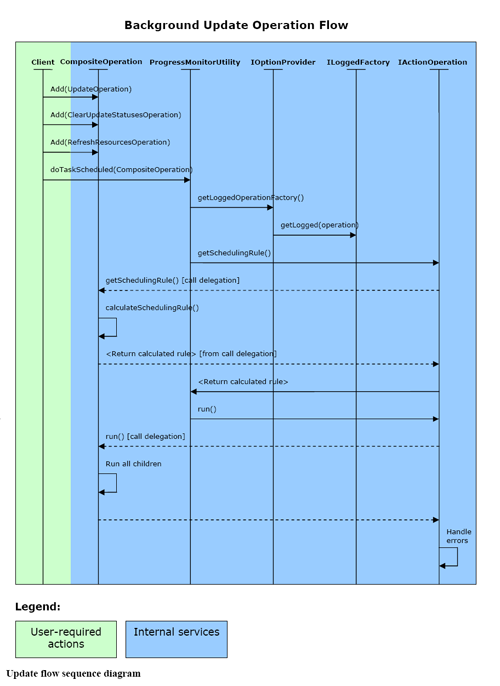

|
|
|
The Subversive project architecture follows to several important requirements for both - UI and Core modules:
Last benefit allows users create their own UI extensions for the Subversive. Such extensions can be tracker integrations or any other application that require SVN client base. Additionally the Subversive UI has several extension points which allows contribute into:
Core plug-in has two API levels - user-level and low-level. First is most frequently used API level and it is based on the low-level API.
User-level API contains following parts:
Low-level API allows user to build Command Framework extensions in order to handle some rarely used or application-specific cases.
The Subversive UI extends Command and Execution Frameworks with UI specific features most of which can be reused by depended projects. Additionally Subversive UI provides powerful and flexible Data Validation Framework for dialogs and wizards. Provided extension points allow reorganizing the Subversive UI functionality in some critical cases. For example "Error Reporting" extension point allows redirect bug reporting into application specific mailing list.
UI plug-in extends Core functionality with several UI-specific features:
The Subversive architecture overview shows how the project structure corresponds to requirements. First of all both modules - Core and UI - are strongly separated and Core module is fully functional and allows user to build automated applications. Unified error handling mechanisms provided by Execution Framework allows improving of the Subversive project failure tolerance. API concept allows easy extending without mixing of different API levels in the same code.
Sample of Subversive Core API usageOn the following picture you can see flow of calls that is required from user in order to update resources to latest revision in background execution thread. And next - Code Sample 1, Code Sample 2 - are samples how it looks in the code.

public class UpdateAction extends AbstractRecursiveTeamAction {
public UpdateAction() {
super();
}
public void run(IAction action) {
IResource []resources = UnacceptableOperationNotificator.
shrinkResourcesWithNotOnRespositoryParents(
this.getShell(), this.getSelectedResources(IStateFilter.SF_ONREPOSITORY));
if (resources == null || resources.length == 0) {
return;
}
this.runScheduled(UpdateAction.getUpdateOperation(this.getShell(), resources));
}
protected boolean isEnabled() throws TeamException {
return this.getSelectedResources(IStateFilter.SF_ONREPOSITORY).length > 0;
}
public static CompositeOperation getUpdateOperation(Shell shell, IResource []updateSet) {
final UpdateOperation mainOp = new UpdateOperation(updateSet, true);
IResourceProvider refreshProvider = new IResourceProvider() {
public IResource []getResources() {
HashSet fullSet = new HashSet(Arrays.asList(mainOp.getResources()));
fullSet.addAll(Arrays.asList(detectOp.getDeleted()));
return (IResource [])fullSet.toArray(new IResource[fullSet.size()]);
}
};
CompositeOperation op = new CompositeOperation(mainOp.getOperationName());
SaveProjectMetaOperation saveOp = new SaveProjectMetaOperation(updateSet);
op.add(saveOp);
op.add(mainOp);
op.add(new RestoreProjectMetaOperation(saveOp));
op.add(new ClearUpdateStatusesOperation(refreshProvider));
op.add(new RefreshResourcesOperation(refreshProvider));
op.add(new NotifyUnresolvedConflictOperation(shell, mainOp));
return op;
}
}
As you can see the UpdateAction class implementation is more complex in compare with the sequence diagram because it supports more functionality - saving Eclipse IDE meta-information in order to prevent problems when something like ".project" is deleted on repository.
In general case it is not required for programmer to implement his own commands and work with SVN Client Library API. Nevertheless programmer can create own commands using SVN Client Library API - it also easy. The command implementation does not requires from programmer any additional actions (like integral resource locking policies calculation for all commands, interfaces that allows data transmitting between commands, error handling and crash recovery support) except of freeing of allocated resources in finally section.
Code Sample 2 Command implementation
public class ExportOperation extends AbstractRepositoryOperation {
protected String path;
public ExportOperation(IRepositoryResource resource, String path) {
super("Export", new IRepositoryResource[] {resource});
this.path = path;
}
protected void runImpl(IProgressMonitor monitor) throws Exception {
IRepositoryResource resource = this.operableData()[0];
IRepositoryLocation location = resource.getRepositoryLocation();
ISVNConnector proxy = location.acquireSVNProxy();
try {
String path = this.path + "/" + resource.getName();
this.writeToConsole(IConsoleStream.LEVEL_CMD, "svn export \"" + resource.getUrl() + "@" + resource.getPegRevision() + "\" -r " + resource.getSelectedRevision() + " \"" + FileUtility.normalizePath(path) + "\" --force" + FileUtility.getUsernameParam(location.getUsername()) + "\n");
proxy.doExport(SVNUtility.getEntryRevisionReference(resource), path, null, Depth.INFINITY, ISVNConnector.Options.FORCE, new SVNProgressMonitor(this, monitor, null));
}
finally {
location.releaseSVNProxy(proxy);
}
}
protected String getShortErrorMessage(Throwable t) {
return "Export operation for '" + this.operableData()[0].getUrl() + "' failed.";
}
}
The Command Framework functionality
The Command Framework totally contains 89 commands which are presents in three subsets:
The Core Commands cover all SVN functionality used in Subversive and it can be fully reused without any restrictions. Most UI Commands are designed for interactive cases. So, they cannot be used in automated processing. Execution Framework Commands, like LoggedOperation and CompositeOperation, are responsible for error handling and resource locking rules calculation.
| Command | Description |
| Execution Framework Part (2) | |
| LoggedOperation | Allows safely write errors to log |
| CompositeOperation | Provides the way to combine different operations |
| Core Command Framework (60) | |
| SaveProjectMetaOperation | Saves project meta (.project and .classpath) in order to prevent project refresh problem when meta is deleted |
| RestoreProjectMetaOperation | Restores project meta (.project and .classpath) in order to prevent project refresh problem when meta is deleted |
| ShareProjectOperation | Shares the project from scratch |
| ReconnectProjectOperation | Reconnects the projects with existing SVN meta-information |
| DisconnectOperation | Disconnects the projects with or without deletion of SVN meta-information |
| CheckoutOperation | Checkout set of projects into workspace |
| CheckoutAsOperation | Checkout project into specified location with specified set of options |
| ObtainProjectNameOperation | Request real project name for the project in SVN repository |
| CommitOperation | Commit resources |
| MergeOperation (experimental) | Interactive merge implementation |
| MergeStatusOperation (experimental) | Interactive merge implementation |
| UpdateOperation | Update resources |
| AddToSVNIgnoreOperation | Add resources to svn:ignore |
| AddToSVNOperation | Add resources to source control |
| LockOperation | Lock resources |
| UnlockOperation | Unlock resources |
| RevertOperation | Revert modifications |
| MarkAsMergedOperation | Mark conflicts as resolved |
| RemoveNonVersionedResourcesOperation | Remove any non-versioned resources starting from the level specified |
| SwitchOperation | Switch project to new URL |
| GetPropertiesOperation | Get all resource properties |
| SetPropertyOperation | Set resource property |
| RemovePropertyOperation | Remove resource property |
| GetAllResourcesOperation | Get all resources for the specified local folder including deleted, missing etc. |
| SaveRepositoryLocationsOperation | Save Subversive meta-information changes |
| DiscardRepositoryLocationsOperation | Remove specified repository locations from the Subversive meta-information |
| AddRepositoryLocationOperation | Add repository location to the Subversive meta-information |
| AddRevisionLinkOperation | Create revision links in the Subversive meta-information |
| RemoteStatusOperation | Update status for the specified resources |
| InfoOperation | Retrieve Info2 structure for the specified resource |
| RelocateWorkingCopyOperation | Relocate working copy |
| CreatePatchOperation | Create patch based on working copy |
| RefreshResourcesOperation | Refresh workspace tree and send internal resource modification events |
| NotifyProjectStatesChangedOperation | Send internal Subversive notification when project state is changed (shared, disconnected, opened, closed etc.) |
| GetRemoteContentsOperation | Get remote file or folder contents into specified folder overriding existing files |
| GetFileContentOperation | Fetch remote file content from SVN |
| GetLocalFileContentOperation | Fetch local file content from SVN (BASE or WORKING revisions) |
| CleanupOperation | Cleanup working copy after power loss or other failure |
| ClearLocalStatusesOperation | Refresh status cache for the specified resources |
| MoveResourceOperation | Move resources between folders in one/different working copy/copies saving the history |
| CopyResourceWithHistoryOperation | Copy resources between folders in one/different working copy/copies saving the history |
| CopyResourceOperation | Copy resources without saving history |
| DeleteResourceOperation | Delete versioned resources |
| RenameResourceOperation | Move resource from one URL to another |
| LocateProjectsOperation | Find Eclipse projects on repository |
| ImportOperation | Import specified folder into repository |
| GetResourceAnnotationOperation | Get annotation for the specified resource |
| GetRemotePropertiesOperation | Get properties for the resource on repository |
| GetLogMessagesOperation | Get resource modification history |
| ExportOperation | Export repository resource into specified local folder |
| DeleteResourcesOperation | Delete resources directly from repository |
| CreatePatchOperation (remote) | Create patch bases on difference between revisions |
| CreateFolderOperation | Create set of folders at any depth on the repository |
| CreateFileOperation | Create file directly on the repository with specified initial content |
| BreakLockOperation | Unlock resource directly on the repository |
| BranchTagOperation | Create branch or tag |
| CopyResourcesOperation (remote) | Copy resources to specified URL |
| MoveResourcesOperation (remote) | Move resources to specified URL |
| UI Command Extensions (17) | |
| UILoggedOperation | UI extension of LoggedOperation, show errors to user and propose to send bug report in case of internal failures |
| ShowUpdateViewOperation | Show synchronize view |
| ShowConflictEditorOperation | Show conflicted files editor (for resources update by external tools) |
| ClearUpdateStatusesOperation | Clear update statuses cached in Synchronize View |
| ClearMergeStatusesOperation (experimental) | Clear merge statuses cached in interactive Merge View |
| ShowPropertiesOperation | Show property editor |
| RefreshRepositoryLocationsOperation | Refresh repository browsing view |
| PrepareRemoteResourcesTransferrableOperation | Insert references to repository resources into clipboard |
| PasteRemoteResourcesOperation | Paste repository resources from clipboard into selected location |
| OpenRemoteFileOperation | Open remote file in its default viewer |
| NotifyUnresolvedConflictOperation | Notify user about unresolved conflicts in time of updating/committing resources |
| ShowMergeViewOperation (experimental) | Show interactive Merge View |
| FileToClipboardOperation | Copy file content into clipboard |
| CompareResourcesOperation | Three-way compare of working copy resources with the selected revision and show the result in compare viewer |
| CompareRepositoryResourcesOperation | Two-way compare of the repository resources with specified revisions and show the result in compare viewer |
| RefreshRemoteResourcesOperation | Refresh repository resources in the repository browsing view |